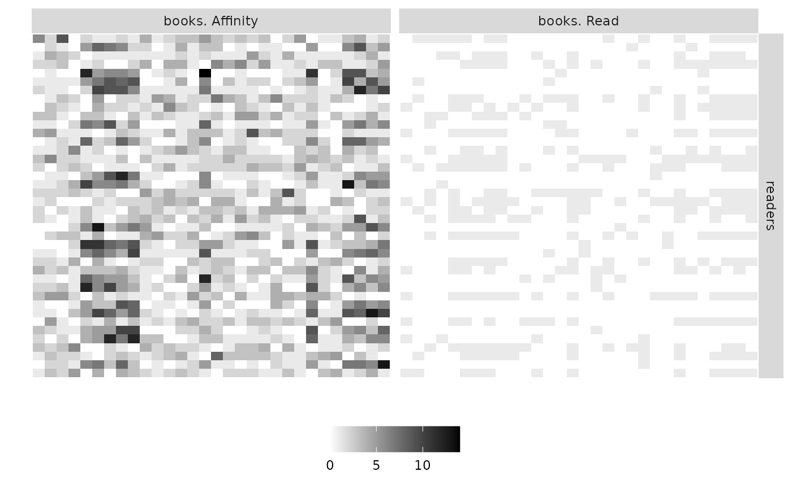

R/plotMyMultiplexMatrix.R
plotMyMultiplexMatrix.RdPlot the matrices corresponding to a Multiplex Network
plotMyMultiplexMatrix(listSBM, memberships = NULL, plotOptions = list()): a list of objects representing the multiplex network (see)
: a list of length equal to the number of Functional Groups providing the clusterings inside each group.
: a list containing the options. See details.
a ggplot object corresponding to the plot
plotOptions is a list containing the following items
"normalized": Boolean. TRUE if the various matrices are presented in the same scale (between O and 1). FALSE otherwise. Default value FALSE
"compact": Boolean. Default value is TRUE if you ask for the matrices to be transposed to have a more compact view
"legend": Boolean. Set TRUE if you want to see the legend. Default value is FALSE
"legend.title": Boolean. Set TRUE if you want to print the title of the legend. Default value is FALSE
"legend.position": Position of the legend. Possible values are 'bottom', 'top','left,'right'. Default value is 'bottom'
"nodeNames": Set true if the node Names must be plotted. Default value is FALSE
"line.color": The color of the lines to separate groups. Default value is red
"line.width": Width of the lines to separate groups. Default value is NULL, automatically chosen
"title": Title of the plot. Default value is NULL
Nnodes <- c(40,30)
blockProp <- list(c(.4,.6),c(0.5,0.5))
nbLayers <- 2
connectParam <- list(list(mean=matrix(rbeta(4,.5,.5),2,2)),list(mean=matrix(rexp(4,.5),2,2)))
names(connectParam) <- c('Read','Score')
model <- c("bernoulli","poisson")
type <- "bipartite"
mySampleMultiplexSBM <-
sampleMultiplexSBM(
nbNodes = Nnodes,
blockProp = blockProp,
nbLayers = nbLayers,
connectParam = connectParam,
model=model,
dimLabels = c('readers','books'),
type=type)
#> [1] "use of sampleMultipartite"
listNet <- mySampleMultiplexSBM$listSBM
names(listNet) <- c("Read","Affinity")
plotMyMultiplexMatrix(listNet,plotOptions=list(legend = TRUE))
